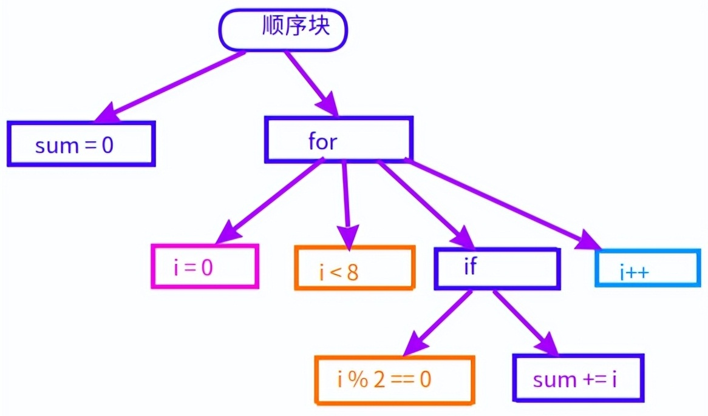
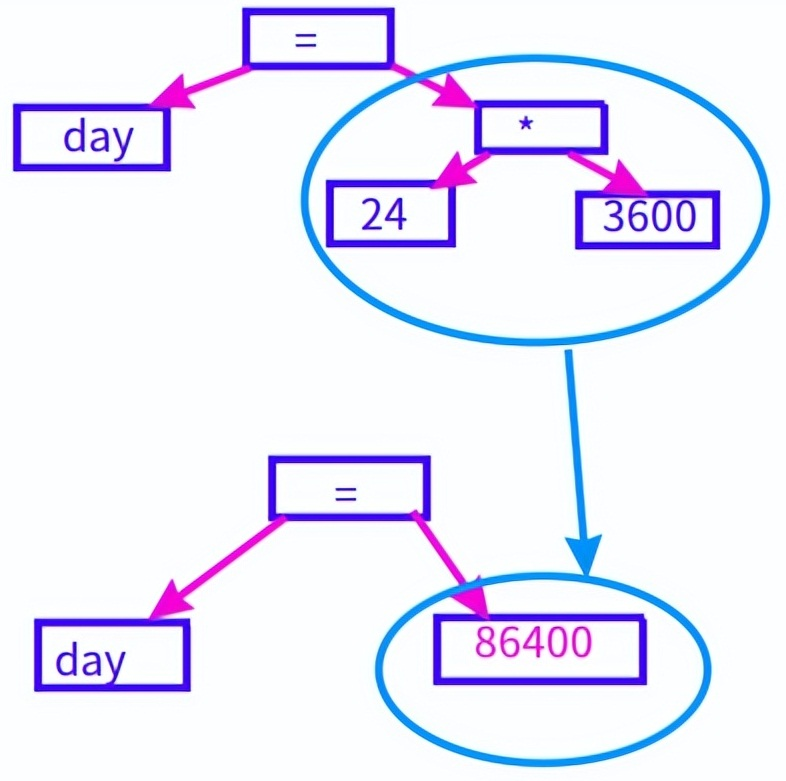
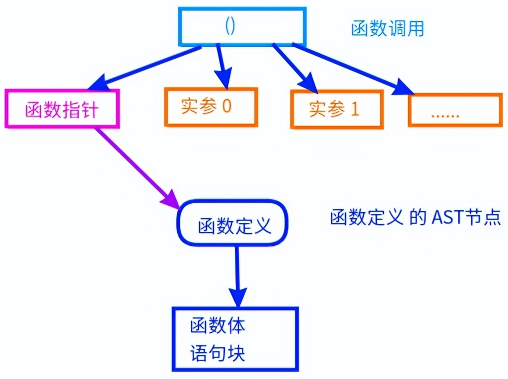

编译器的代码架构
2022-07-25 底层技术栈
1 词法分析 lexical analysis 2 语法分析 syntax analysis, parsing; 3 语义分析 semantic analysis 4 中间代码生成（三地址码） 6 寄存器分配 7 指令选择 8 机器码生成 9 目标文件生成 10 可执行文件的生成
编译器，是把高级语言转化为机器语言的工具软件。
高级语言的代码也是个文本字符串，所以编译器的前端与sed、gawk、grep是差不多的，都是广义上的字符串匹配。
编译器把代码转化为机器码的过程如下：
这是编译器里最简单的模块。
词法分析，就是通过查看下一个字符来确定怎么把代码字符串分割成一个个的语法词汇。
起始符、终止符，是词法分析的主要概念。
int day = 24 * 3600;
这行代码的第1个词是int，起始符是i，终止符是空格。
在词法分析时它是一个标志符，也就是字母、下划线、数字组成的一个字符串，必须以字母或下划线开头。
在分析出int这个标志符之后，它后面的空格就没用了，直接丢弃它。
第2个词day也是一个标志符，起始符是d，终止符也是空格。
习惯把代码写得密集的人可能这么写：int day=24*3600;
这时day的终止符是=，它同时还是下一个词的起始符，在把day加入词汇序列之后需要从=开始接着分析。
第3个词是=，第4个词是24，第5个词是*，第6个词是3600，第7个词是分号;
在词法分析时要把数字字符串24和3600转化为整数24和3600，这两个在程序里是不同的。
10进制、16进制、8进制、2进制、浮点数的支持，都是词法分析时的任务。
另外，转义字符串也要在这里支持。
'\0' 在源代码里是字符串文本，包含着4个字符' \ 0 '，要转义成单个字符0。
'\r' '\n' '\t'的处理和'\0'一样。
词法分析还是很好写的。
这是编译器前端最难写的模块，它需要把源代码转化成一棵描述整个程序结构的多叉树。
这个多叉树叫做抽象语法树（英文缩写AST）。
类型、变量、运算符、函数定义、函数调用、if语句、for/while循环，都是这个这棵树的一部分。
抽象语法树的层次结构，与源代码的结构是一样的。
如果是这样的源代码的话：
int sum = 0;
for(int i = 0; i < 8; i++) {
if(i % 2 == 0)
sum += i;
}
那么语法树是这样的：

语法树
初始化语句sum = 0与后续的for循环是顺序执行的，它们属于同一个顺序块，在语法树上有同一个父节点。
for循环有4个子节点：初始化表达式i = 0，条件i < 8，循环体if语句、更新表达式i++。
其中循环体又是个if语句，具有2个子节点：条件表达式i % 2 == 0，主体sum += i。
while循环的结构与for类似，只要去掉初始化表达式和更新表达式就行，只有2个节点。
把词法分析之后的词汇序列转化成抽象语法树时，常用的方法是有限自动机。
也可以把代码直接写成递归函数调用，但是后续改起语法来就比较麻烦。
我一开始就是把scf的parse模块写成了递归函数调用，后来为了可以编辑语法，又自己做了个简单的有限自动机。
把语法树遍历一遍，检查一下类型是否匹配，就是语义分析。
如果要支持面向对象的话，就可以在这里进行函数重载和运算符重载。
常量表达式也要在这里计算出来，int day = 24 *3600要转化成day = 86400。

常量表达式的计算
对语法树进行遍历时，不同的语法节点使用的处理函数是不同的，这就是语义。
符号=要当作赋值，符号+要当作加法，其他类似。
C语言里常见的函数调用，语法树是这样的：
int printf(const char* fmt, ...);
int main()
{
printf("hello world\n");
}
函数调用也是一个运算符，具有一个单独的语法节点，它的子节点都是它的参数：
其中函数名也是一个参数，要转化为对应的函数体的节点的指针。
通过这个指针才可以找到函数的代码，进行内联优化（inline）。

函数调用和定义
如果要是调用的外部函数，只有声明没有实现，那就没法内联了。
从这里开始就是编译器的后端了。
这一步也是对语法树进行遍历，把对应的表达式、函数、if语句、for循环都变成类似汇编的三地址码。
上面那段for循环，这时会被变成如下的三地址码序列：
assign sum, 0 assign i, 0 start: // for循环的开头 cmp i, 8 jge end // 条件不成立，则结束循环 assign t, i % 2 // t是编译器生成的临时变量 cmp t, 0 jne next add sum, sum, i // 这行才是三地址码 next: // 下一轮for循环 inc i // 循环变量+1 jmp start // 跳转回开头，继续循环 end： // for循环结束
到了这里，那个复杂的树型结构已经变成线形结构了，可以按顺序写到一个文本文件里，这就是汇编代码。
到这里，编译器就可以生成类似gcc -S的汇编代码了。
这是编译器后端的主要部分，属于机器无关优化，这部分的优化是不依赖于CPU平台的。
scf框架的这部分包含以下功能：
1）内联函数 2）有向无环图DAG的生成 3）带二级指针参数的函数调用分析 4）指针别名分析，也就是分析指针指向的变量 5）活跃变量分析 6）变量的加载保存分析 7）需要自动内存管理的变量分析 8）代码流程图的<strong>深度优先排序 9）自动内存管理代码的添加 10）基本块内的优化 11）循环分析
会把一些变量尽量在循环的入口加载，在循环出口保存，减少循环内的内存读写。
没有常量传播的优化，哪天有空我把它添上
使用图的着色算法，之前的文章写过。
直接写在代码里的，没做龙书里提到的那个树的覆盖。
根据intel x64的手册编写机器码就行。
也就是gcc -c 得到那个.o文件。
Linux上的elf文件是什么样的就怎么写，可以参考linux的man手册里对elf的讲解。
这是连接器的功能，它把多个.o .a .so文件连接成一个可执行文件。
这一步的代码在scf/elf目录，有兴趣的可以看看。
连接之后的文件就可以在shell命令行里运行了。